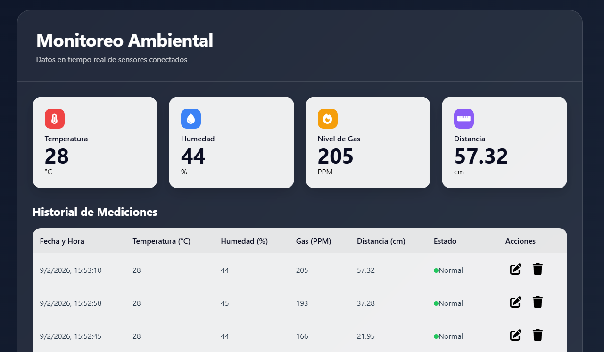
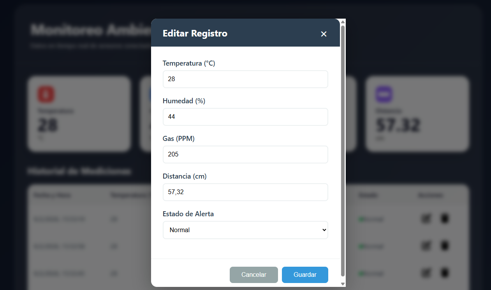
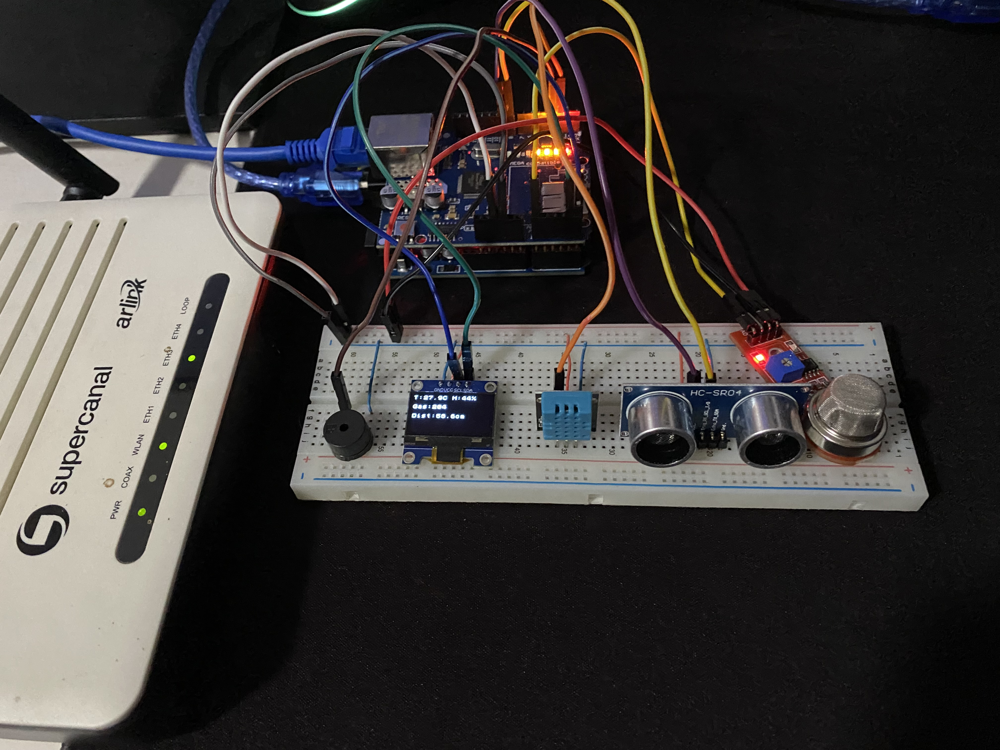
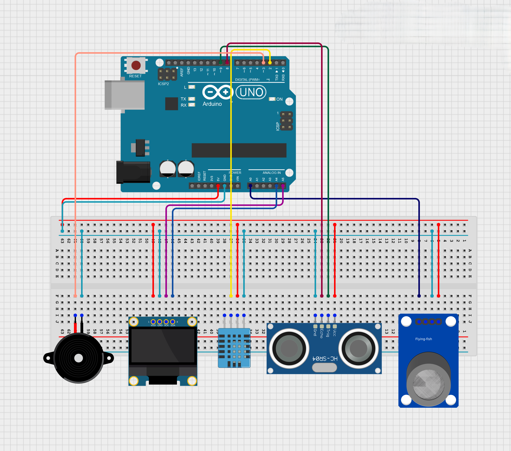

Propuesta
Este proyecto consiste en un sistema de monitoreo ambiental inteligente capaz de medir variables del entorno como temperatura, humedad, presencia de gas y distancia, utilizando sensores electrónicos conectados a una placa Arduino.
El dispositivo recopila constantemente la información del ambiente, la procesa y la envía a un sistema central donde los datos se almacenan y se organizan para su consulta. A través de una interfaz web clara y visual, cualquier usuario puede editar, borrar y observar las mediciones en tiempo real, revisar registros anteriores y detectar situaciones de riesgo de forma sencilla. El sistema funciona actualmente como un prototipo operativo sobre un servidor local mediante XAMPP.
En esencia, el sistema conecta el mundo físico con una plataforma digital, permitiendo supervisar condiciones ambientales, de manera automática y continua.
Video demostración: Ver video en YouTube
Hardware
• Arduino UNO R3: Unidad de control principal que coordina la lectura de sensores y el envío de datos.
• Módulo Ethernet W5100: Permite la conexión del sistema a la red para la transmisión de información hacia el servidor vía Ethernet.
• Sensores electrónicos: DHT11 (temperatura y humedad), HC-SR04 (medición de distancia), MQ-2 (detección de gases) y buzzer para alertas sonoras.
• Pantalla OLED: Muestra en tiempo real las mediciones principales sin necesidad de acceder a la interfaz web.
Software
• Servidor Apache (entorno local XAMPP): Servicio web que recibe las solicitudes del sistema y gestiona la comunicación con los clientes.
• Backend en PHP: Lógica del servidor encargada de procesar las mediciones, validarlas y conectarse con la base de datos.
• Base de Datos MySQL: Sistema de almacenamiento donde se registran y organizan todas las mediciones ambientales.
• Interfaz Web: Desarrollada con HTML, CSS y JavaScript para visualizar la información en tiempo real y permitir la interacción del usuario.
• Arduino IDE: Entorno de desarrollo utilizado para programar la placa Arduino en un lenguaje basado en C/C++, gestionar las librerías de los sensores y cargar el firmware del sistema.


¿Qué Hace el Sistema?
• Los sensores miden el ambiente constantemente cada segundo
• Arduino procesa esa información y la envía por la red cada 10 segundos
• El servidor recibe los datos y los guarda en una base de datos MySQL
• La página web se actualiza automáticamente cada 5 segundos
• Sistema de alertas: Normal (Gas ≤250 y Dist ≥15cm), Advertencia (Gas >250 o Dist <15cm), Peligro (Gas >400 o Dist <5cm)
  


Documentación Técnica del Sistema
Este proyecto demuestra la implementación práctica de conceptos fundamentales de Comunicación de Datos: arquitectura cliente-servidor, protocolos de red, CRUD completo, intercambio de datos en formato JSON y flujo de información end-to-end.
• Arquitectura Cliente-Servidor: Arduino actúa como cliente HTTP enviando datos al servidor Apache. Los navegadores web consultan estos datos mediante peticiones HTTP al servidor Apache.
• Protocolos de Comunicación TCP/IP: La transmisión de datos se realiza mediante HTTP (Capa de Aplicación), funcionando sobre TCP (Capa de Transporte) e IPv4 (Capa de Red), dentro de una red local Ethernet (Capa de Enlace). TCP garantiza una entrega confiable de la información mediante control de errores y mecanismos de retransmisión.
• Referencia al Modelo OSI: El sistema puede analizarse según las 7 capas del modelo OSI como marco teórico: Capa Física (Cable UTP), Enlace (Ethernet 802.3), Red (IPv4), Transporte (TCP), Sesión (Conexiones HTTP), Presentación (JSON), Aplicación (HTTP/1.1). Cada capa cumple su función específica en la comunicación Arduino-Servidor.
• Formato de Datos - JSON: Estructura ligera y legible para intercambio de información. El servidor responde en JSON y datos estructurados.
• CRUD Completo: 4 endpoints implementados: POST guardar_datos.php (Create), GET obtener_datos.php (Read), PUT actualizar_registro.php (Update), DELETE eliminar_registro.php (Delete).
• Código: Todo el código del proyecto se encuentra debidamente comentado y documentado para facilitar su comprensión y análisis
• Base de Datos: MySQL con tabla sensor (7 campos).
CREATE TABLE sensor (
id INT UNSIGNED AUTO_INCREMENT PRIMARY KEY,
temperatura FLOAT NULL,
humedad FLOAT NULL,
gas INT NULL,
distancia FLOAT NULL,
alerta INT NULL,
fecha TIMESTAMP NOT NULL DEFAULT CURRENT_TIMESTAMP
);• Arquitectura: Sistema de 5 capas - Hardware (sensores) → Comunicación (TCP/IP) → Backend (PHP) → Base de Datos (MySQL) → Frontend (HTML/CSS/JS).
• Topología de Red: Red local. Arduino en IP estática ante falla de asignación automática 192.168.10.150, servidor en 192.168.10.100.
• Flujo de Datos End-to-End: Sensores → Arduino (lectura) → HTTP POST → Servidor PHP (validación) → MySQL (almacenamiento) → Interfaz Web (visualización en tiempo real).
• Frecuencia de Actualización: Arduino envía datos cada 10 segundos. Interfaz web consulta cada 5 segundos (actualización asíncrona sin recargar).
• Diagrama de Conexiones: Shield Ethernet conectado vía SPI (pines 10-13). DHT11 en pin digital 2. HC-SR04 en pines 8-9. MQ-2 en pin analógico A0. OLED vía I2C (A4-A5).
• Comunicación Serie y Señales de Sensores: El sistema utiliza transmisión serie en distintos niveles: UART (9600 bps, asíncrona, vía USB) para el Monitor Serie, SPI (serie síncrona, emisor y receptor comparten una señal de reloj) para el Shield Ethernet y I2C (bus síncrono SDA/SCL maestro-esclavo) para la pantalla OLED. Los sensores emplean señales digitales (DHT11, HC-SR04) y señal analógica (MQ-2). A nivel de transporte, TCP utiliza confirmaciones ACK y retransmisión automática (ARQ).
• Persistencia de Datos: ~8,640 registros diarios (1 cada 10s).
• Confiabilidad del Sistema: Timeouts de 5 segundos en conexiones. Reintentos automáticos.
Repositorio de GitHub (archivos y guía de instalación): Repositorio
Trabajos prácticos de comprensión: RepositorioTPs
Datasheet (hardware): Ver hojas de datos